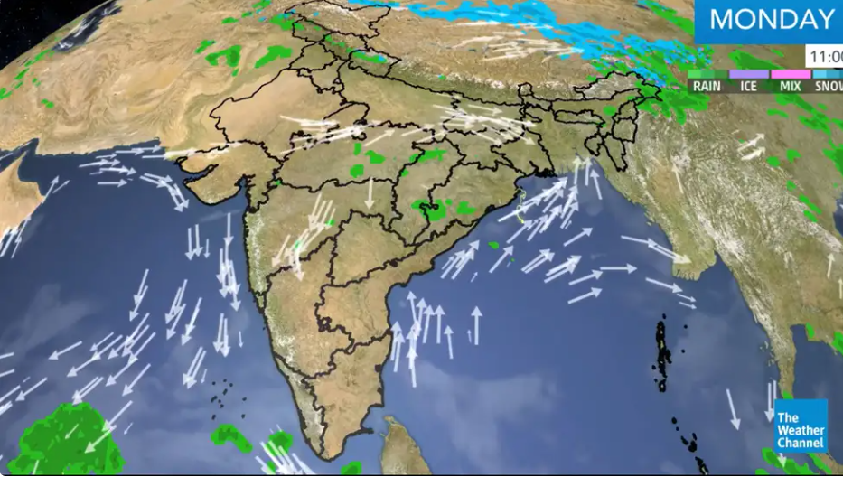
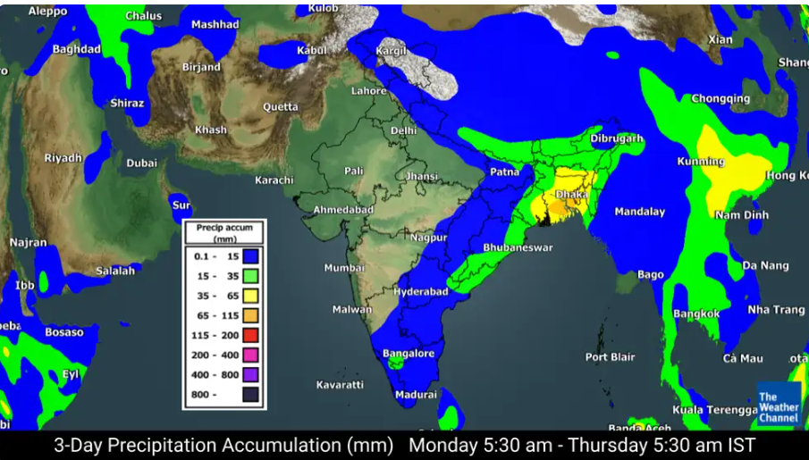
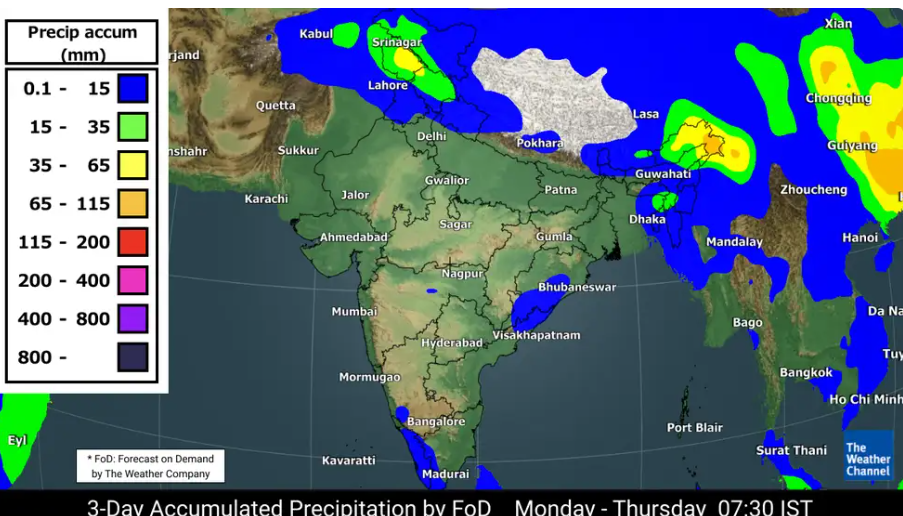

May 6 Weather Forecast: Meghalaya, Tripura to Experience Heavy Rains and Thunderstorms; Showers Expected in Andhra, TN.
 Tuesday (Jul 2):Meghalaya and Tripura: Expect widespread rain with heavy falls and thunderstorms.
Sub-Himalayan West Bengal, Assam, Nagaland, Manipur, Mizoram, Arunachal Pradesh, Sikkim: Widespread showers and thunderstorms likely.
Gangetic-West Bengal: Fairly widespread rain and thunderstorms expected.
Thunderstorms accompanied by lightning and gusty winds over West Rajasthan, East Madhya Pradesh, Vidarbha, Chhattisgarh, Coastal Andhra Pradesh and Yanam, and with lightning at isolated places over Arunachal Pradesh, Kerala, Mahe, Sub-Himalayan West Bengal, Sikkim and Lakshadweep.
Heavy rainfall is possible at isolated places over Jammu-Kashmir, Ladakh, Gilgit, Baltistan, Muzaffarabad, Himachal Pradesh, Arunachal Pradesh, Assam and Meghalaya.
Hot and humid weather is expected over West Assam, Meghalaya, Tripura, Kerala, Mahe and Coastal Karnataka.
Heatwave to severe heatwave conditions are on the cards over Gangetic West Bengal, Bihar, Jharkhand and Odisha.
Heatwave conditions have been forecast over East Uttar Pradesh, Sub-Himalayan West Bengal, Saurashtra, Kutch, Konkan, Goa, Tamil Nadu, Puducherry, Karaikal, Coastal Andhra Pradesh, Yanam, Telangana, Rayalaseema and Interior Karnataka.
Warm night conditions are very likely to prevail in isolated pockets over East Uttar Pradesh, Saurashtra and Kutch.
5-day nationwide forecast  Tuesday (May 7):Thunderstorms accompanied by lightning, gusty winds are very likely over Nagaland, Manipur, Mizoram and Tripura.
Thunderstorms accompanied by lightning and gusty winds over Assam, Meghalaya, Jammu-Kashmir, Ladakh, Gilgit, Baltistan, Muzaffarabad, Punjab, Coastal Andhra Pradesh and Yanam.
Thunderstorms accompanied by lightning over Himachal Pradesh, Arunachal Pradesh, Kerala, Mahe, Sub-Himalayan West Bengal and Sikkim.
Heatwave to severe heatwave conditions are very likely to prevail at many places over Gangetic West Bengal, and at some places over Odisha, Bihar and Jharkhand.
Heatwave conditions have been forecast over Sub-Himalayan West Bengal, East Uttar Pradesh, Tamil Nadu, Puducherry, Karaikal, Coastal Andhra Pradesh, Yanam, Telangana, Rayalaseema and Interior Karnataka.
 3-day rainfall accumulation from Monday to Thursday (TWC Met Team)A western disturbance as a cyclonic circulation lies over East Afghanistan and neighbourhood upto middle tropospheric levels and a cyclonic circulation lies over Northwest Rajasthan and neighbourhood in lower tropospheric levels. Under their influence:
i. Fairly widespread to widespread light to moderate rainfall/snowfall accompanied with thunderstorm and lightning is likely over Jammu-Kashmir, Ladakh, Gilgit, Baltistan, Muzaffarabad, Himachal Pradesh and Uttarakhand from April 29-30 with possibility of hailstorm over Himachal Pradesh and Uttarakhand on April 29.
ii. Isolated heavy rainfall is also likely over Jammu-Kashmir, Gilgit, Baltistan, Muzaffarabad, Himachal Pradesh on April 29.
iii. Isolated to scattered rainfall accompanied by thunderstorms, lightning and gusty winds are very likely over Punjab, Haryana and Chandigarh during April 29.
iv. Isolated rainfall accompanied by thunderstorm, lightning and gusty winds is possible over Uttar Pradesh on April 29.